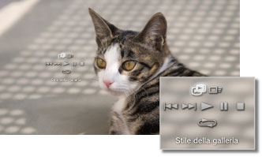

Foto > Visualizzazione di immagini in formato galleria
Visualizzazione di immagini in formato galleria
Ogni immagine viene visualizzata automaticamente, nell'ordine. La galleria viene avviata dopo avere selezionato l'icona per una cartella o un supporto contenente immagini e avere premuto il tasto START.
Note
- La galleria può essere avviata anche dal pannello di controllo o dal menu opzioni per un'immagine.
- Se non è possibile avviare la galleria premendo il tasto START, eseguire l'operazione dal pannello di controllo.
Utilizzo del pannello di controllo galleria
Premere il tasto  durante una galleria per visualizzare il pannello di controllo.
durante una galleria per visualizzare il pannello di controllo.

 |
Stile della galleria | Selezionare uno dei cinque schemi di visualizzazione della galleria. |
|---|---|---|
 |
Velocità di scorrimento | Selezionare una delle tre velocità di scorrimento: [Veloce] > [Normale] > [Lento]. |
 |
Precedente | Consente di spostarsi sull'immagine precedente. |
 |
Seguente | Consente di spostarsi sull'immagine seguente. |
 |
Riproduci | Avvia la galleria. |
 |
Pausa | Mette in pausa la galleria. |
 |
Ferma | Arresta la galleria. |
 |
Ripeti | Riproduce ripetutamente la galleria. |
Nota
Se (Stile della galleria) è impostato su [Album fotografico] o [Album fotografico 2], è possibile utilizzare la levetta destra del controller wireless SIXAXIS™ per utilizzare funzioni quali l'ingrandimento o la riduzione dell'immagine oppure la regolazione della velocità di scorrimento.
Consente la riproduzione di una presentazione durante la riproduzione di musica
È possibile riprodurre contemporaneamente una presentazione e la musica.
1. |
Avviare la riproduzione della musica in |
|---|---|
2. |
Premere il tasto PS. |
3. |
Selezionare |
 (Musica).
(Musica). (Foto), scegliere le immagini o la cartella da visualizzare nella presentazione, quindi premere il tasto START.
(Foto), scegliere le immagini o la cartella da visualizzare nella presentazione, quindi premere il tasto START.Note
- Se si preme il tasto PS durante la riproduzione simultanea, viene visualizzato il menu XMB™ ed è possibile cambiare la musica o le immagini.
- Per uscire, è necessario interrompere la riproduzione della presentazione e della musica separatamente. Dopo averne interrotta una, selezionare il brano o l'immagine in riproduzione e arrestare la riproduzione.
- Non è possibile riprodurre contemporaneamente una presentazione e un Super Audio CD.
- Se
 (Impostazioni) >
(Impostazioni) >  (Impostazioni della musica) > [Frequenza di uscita] è impostato su [44,1 / 88,2 / 176,4 kHz], non è possibile riprodurre contemporaneamente la galleria e il contenuto musicale.
(Impostazioni della musica) > [Frequenza di uscita] è impostato su [44,1 / 88,2 / 176,4 kHz], non è possibile riprodurre contemporaneamente la galleria e il contenuto musicale.
Avviso
Su alcuni sistemi PS3™ non è consentita la riproduzione di Super Audio CD. Per ulteriori informazioni, consultare [Tipi di dischi riproducibili].